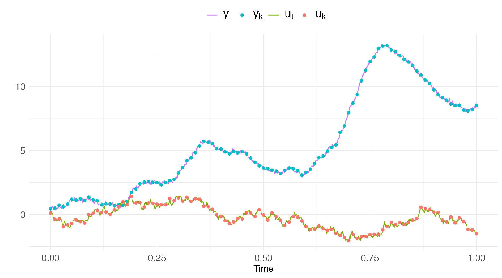
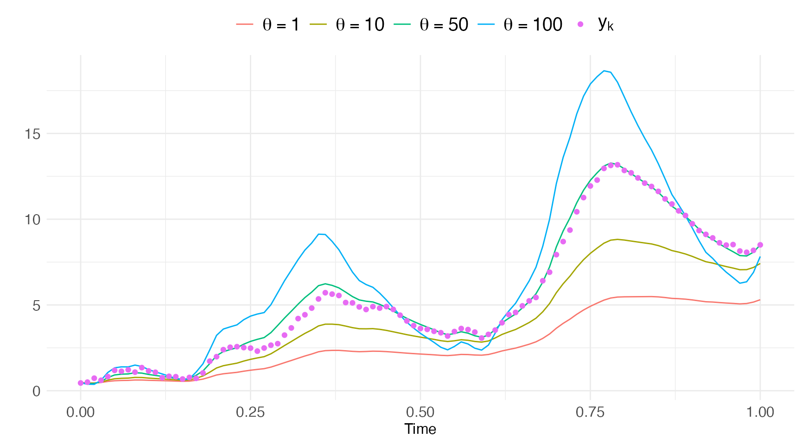
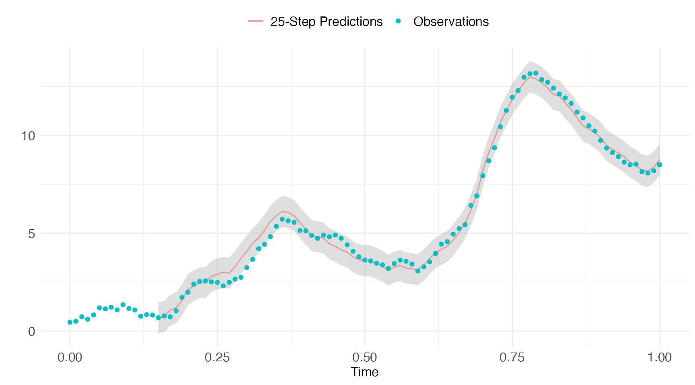
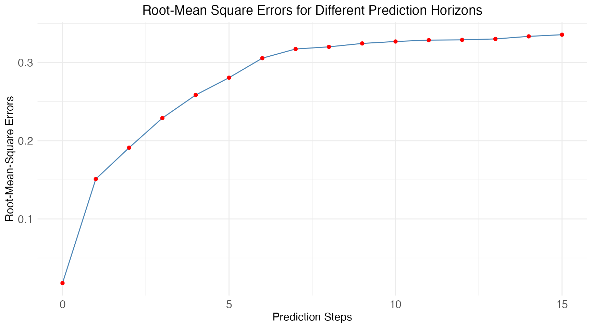

This vignette demonstrates how to use the predict method
for calculating k-step-ahead forecasts for the mean and
variance, available for the Kalman filtering methods (lkf,
ekf and ukf).
Note: These moment predictions assume that the
underlying probability density of the SDE remains approximately
Gaussian. This will hold for linear and mildly non-linear SDEs. In
addition the assumption will be worse the longer the prediction horizon.
In those cases the simulate method may be more useful (see
the relevant vignette).
Introduction
Notation
We use subscript to denote time for continuous variables.
We use subscript to indicate discrete time-points for discrete variables.
We denote the set of observations from the initial time until the “current” time by
We denote mean and variance by and .
We use and to denote the mean/variance at time conditional on the observations i.e.
Stochastic State Space System
We consider the following types of stochastic state space systems
where the observation noise is zero-mean Gaussian . In this notation are inputs and are fixed effects parameters to be estimated.
We refer to the functions as the drift, as the diffusion, and as the link. We may omit arguments and just write e.g. for readability.
Observations and Likelihood
The likelihood, which is the joint density of all observations, can be rewritten by using repeated conditioning as
What is a “Prediction”?
When we say predictions we mean forecasts of the mean and variance (first and second order moments) of the underlying SDE. The fact that these are used to represent the forecast distribution implies the underlying assumption of linearity of the SDE, such that distributions are always Gaussian.
We use the moment differential equations of the SDE to generate these forecasts.
Moment Differential Equations
The moment differential equations (MDEs) are ordinary differential equations that govern the evolution of the moments of . The first two moments (mean and variance) are governed by
In the approximate Gaussian setting where, with respect to , is linear and is constant, the MDEs simplify to
A k-step prediction is a prior estimate of the assumed Gaussian distribution k time-steps ahead, relatively to the current position. This distribution is parametrized by the prior mean and variance . These priors are obtained by integrating the MDEs forward in time, starting from the current posterior distribution parametrized by and i.e.
In a Kalman filter setting this amounts to repeatedly performing time-update steps while skipping the data-update step entirely.
Algorithm
When using the predict method the forecast horizon is
controlled by the k.ahead argument, i.e. how many
time-steps “into the future” forecasts are wanted for. The algorithm
returns
(N = nrow(data) - k.ahead) forecast scenarios. Each of
these
scenarios consist of
state values, one for each time point
where
.
The algorithm carries out the following step-wise procedure:
Filter with the provided data to obtain posterior state and variance estimates for every point in time in the provided
data[,"t"]column.Extract the first estimates and discard the remainder.
For each posteriors, integrate the MDEs forward from the initial time until time producing moment forecasts at each of the intermediate times .
The output of predict is a list with the two entries
states and observations. Each entry is a
matrix with
rows, obtained by row-binding each forecast scenario together.
Example
We consider the Ornstein Uhlenbeck SDE with time-varying mean and with identify link function:
The mean is the “arbitrary” time-varying signal , where is a known input signal.
Create Model
First we create the model as follows:
## Load libraries
library(ctsmTMB)
library(ggplot2) ## plots
library(latex2exp) ## LaTeX plot fonts
## Create model
model <- newModel()
model$addSystem(dx ~ theta * (a*u^2-cos(2*pi*t*u) - x) * dt + sigma_x*dw)
model$addObs(y ~ x)
model$setVariance(y ~ sigma_y^2)
model$addInput(u)
## Set parameter values
## note: not strictly necessary to set lower/upper bounds
model$setParameter(
theta = c(initial = 2, lower = 0, upper = 100),
a = c(initial = 1, lower = 1e-5, upper = 100),
sigma_x = c(initial = 0.2, lower = 1e-5, upper = 5),
## fix sigma_y to 0.05 by not giving any upper/lower bounds
sigma_y = c(initial = 5e-2)
)
## Set initial state mean and covariance
## note: diag(1) is not strictly needed
model$setInitialState(list(1, 1e-1*diag(1)))Create Data using Simulate
Now we create data to perform predictions on using the
simulate method, using the true parameters
and the input signal
## set true parameters, and create data
true.pars <- c(theta=4, a=10, sigma_x=1, sigma_y=0.05)
dt.sim <- 1e-3
t.sim <- seq(0, 1, by=dt.sim)
## seed for input creation
set.seed(20)
u.sim <- cumsum(rnorm(length(t.sim),sd=0.1))
# u.sim <- tanh(sin(u.sim))
df.sim <- data.frame(t=t.sim, y=NA, u=u.sim)
## set rng seeds for C++ states and observations
cpp.seeds <- c(20,20)
## perform simulation
sim <- model$simulate(data=df.sim,
pars=true.pars,
n.sims=1,
silent=T,
cpp.seeds = cpp.seeds)
## extract simulations
y.sim <- sim$observations$y$i0[,1]
## extract observations as every 10th simulation
iobs <- seq(1, length(t.sim), by=10)
t.obs <- t.sim[iobs]
y.obs <- y.sim[iobs]
u.obs <- u.sim[iobs]
## create data
df.obs <- data.frame(
t = t.obs,
u = u.obs,
y = y.obs
)We show the simulated and observed inputs and observations in the plot below.
ggplot() +
geom_line(aes(x=t.sim, y=y.sim, color="y_t")) +
geom_point(aes(x=t.obs, y=y.obs, color="y_k")) +
geom_line(aes(x=t.sim, y=u.sim, color="u_t")) +
geom_point(aes(x=t.obs, y=u.obs, color="u_k")) +
scale_color_discrete(
labels=unname(TeX(c("$y_{t}$","$y_{k}$","$u_{t}$","$u_{k}$"))),
breaks = c("y_t", "y_k", "u_t", "u_k"),
) +
ctsmTMB:::getggplot2theme() +
theme(legend.text = ggplot2::element_text(size=15)) +
labs(color="",x="Time",y="")
Predict
We can now try to predict on the generated data
## set the first observation to NA
df.temp <- df.obs
df.temp$y[1] <- NA
## predict
pred <- model$predict(data=df.temp,
pars=true.pars,
k.ahead=nrow(df.temp)-1)
## Checking and setting data...
## Predicting with C++...
## Returning results...
## Finished!A few notes for the code above:
We use the default value of argument
k.ahead = nrow(data)-1to get a forecast over the entire time-vector. This means that there is only forecast scenario, but its very long.We remove the first observation to prevent a posterior update at the initial time-point
t[1]. This allows us to fully control the initial state mean and variance viasetInitialState.Since
k.ahead = nrow(data)-1and implies just one forecast scenario starting from the initial time point the remaining observationsy[2:nrow(data)]are not used at all, and might as well beNA.
Output
The returned pred object is a list of two matrices named
states and observations.
-
The first five columns of each matrix are time indices and time-values for each of the forecast scenarios:
- The column
iholds the time-index from where the forecast began. - The column
jholds the time-index for where the forecast is. - The column
t.iis the numeric time value associated with indexi. - The column
t.jis the numeric time value associated with indexj. - The column
k.aheadis the number of forecasted timesteps since the last posterior update (if any data was available at that time-point).
- The column
The next columns in both matrices are mean and covariances for the states and observations respectively, named appropriately.
The final columns in the
observationsmatrix also hold the corresponding observations in the data. The name is suffixed by.datae.g.y.data.
head(pred$states)
## i. j. t.i t.j k.ahead x var.x
## [1,] 0 0 0 0.00 0 1.000000 0.1000000
## [2,] 0 1 0 0.01 1 0.935318 0.1019221
## [3,] 0 2 0 0.02 2 0.909732 0.1036964
## [4,] 0 3 0 0.03 3 1.009002 0.1053343
## [5,] 0 4 0 0.04 4 1.226051 0.1068463
## [6,] 0 5 0 0.05 5 1.357398 0.1082420
head(pred$observations)
## i. j. t.i t.j k.ahead y var.y y.data
## 1 0 0 0 0.00 0 1.000000 0.1025000 NA
## 2 0 1 0 0.01 1 0.935318 0.1044221 0.4999998
## 3 0 2 0 0.02 2 0.909732 0.1061964 0.7304777
## 4 0 3 0 0.03 3 1.009002 0.1078343 0.6074823
## 5 0 4 0 0.04 4 1.226051 0.1093463 0.8235081
## 6 0 5 0 0.05 5 1.357398 0.1107420 1.1861044Long prediction horizons
We can perform long horizon estimates simply by setting the
k.ahead argument very large. The default and maximum
allowed value is k.ahead = nrow(.data)-1. Thus, by default,
the predict method will generate one single prediction the
length of the provided data.
This is useful for instance when searching for good initial guesses
for the optimizer before calling the estimate method.
Consider the example below where we calculate predictions for a series
of differnet values of theta:
## create vectors with different theta's
pars <- lapply(c(1,2,4,8), function(x) c(x, 10, 1, 0.05))
## predict for the various theta values
pred1 = model$predict(df.obs, pars=pars[[1]])
pred2 = model$predict(df.obs, pars=pars[[2]])
pred3 = model$predict(df.obs, pars=pars[[3]])
pred4 = model$predict(df.obs, pars=pars[[4]])Plotting these state estimates against the data we get a feeling that (with being the truth here).
plot.df <- data.frame(t = pred$states[,"t.j"],
t.obs = t.obs,
y.obs = y.obs,
x1=pred1$states[,"x"],
x2=pred2$states[,"x"],
x3=pred3$states[,"x"],
x4=pred4$states[,"x"])
ggplot(data=plot.df) +
geom_line(aes(x=t, y=x1, color="x1")) +
geom_line(aes(x=t, y=x2, color="x2")) +
geom_line(aes(x=t, y=x3, color="x3")) +
geom_line(aes(x=t, y=x4, color="x4")) +
geom_point(aes(x=t.obs, y=y.obs, color="y")) +
scale_color_discrete(
labels=unname(TeX(c("$\\theta=1$","$\\theta=10$","$\\theta=50","$\\theta=100$","$y_{k}$"))),
breaks = c("x1", "x2", "x3", "x4", "y"),
) +
ctsmTMB:::getggplot2theme() +
theme(legend.text = ggplot2::element_text(size=15)) +
labs(color="",x="Time",y="")
Forecast Evaluation
We can evaluate the forecast performance of our model by comparing predictions against the observed data. We start by estimating the most likely parameters of the model:
fit = model$estimate(df.obs)
## Checking and setting data...
## Constructing objective function and derivative tables...
## Minimizing the negative log-likelihood...
## 0: 12263.953: 2.00000 1.00000 0.200000
## 10: -48.649843: 3.63327 10.1890 1.17251
## 20: -49.410101: 3.63423 10.2280 1.30571
## Optimization finished!:
## Elapsed time: 0.005 seconds.
## The objective value is: -4.94101e+01
## The maximum gradient component is: 3.6e-05
## The convergence message is: relative convergence (4)
## Iterations: 20
## Evaluations: Fun: 23 Grad: 21
## See stats::nlminb for available tolerance/control arguments.
## Returning results...
## Finished!
print(fit)
## Coefficent Matrix
## Estimate Std. Error t value Pr(>|t|)
## theta 3.63423 0.27084 13.418 < 2.2e-16 ***
## a 10.22801 0.56680 18.045 < 2.2e-16 ***
## sigma_x 1.30571 0.11602 11.255 < 2.2e-16 ***
## ---
## Signif. codes: 0 '***' 0.001 '**' 0.01 '*' 0.05 '.' 0.1 ' ' 1and then predict over an appropriate forecast horizon. In this example we let that horizon be 25-steps:
pred.horizon <- 15
pred = model$predict(df.obs, k.ahead=pred.horizon)
## Checking and setting data...
## Predicting with C++...
## Returning results...
## Finished!Let’s plot the pred.horizon-step predictions against the
observations.
pred.obs = pred$states[pred$states[,"k.ahead"]==pred.horizon,]
Lastly we calculate the mean prediction accuracy using an RMSE-score for all prediction horizons:
pdf <- data.frame(pred$states, y.data = pred$observations[,"y.data"])
rmse <- data.frame(
k.ahead = 0:pred.horizon,
rmse = sapply(
with(pdf, split(pdf, k.ahead)),
function(df) {
sqrt(mean((df$x - df$y.data)^2, na.rm = TRUE))
})
)
Arguments
The predict method accepts the following arguments
model$predict(data,
pars = NULL,
method = "ekf",
ode.solver = "rk4",
ode.timestep = diff(data$t),
k.ahead = nrow(data)-1,
return.k.ahead = 0:min(k.ahead, nrow(data)-1),
return.variance = c("marginal", "none", "covariance", "correlation"),
ukf.hyperpars = c(1, 0, 3),
initial.state = self$getInitialState(),
estimate.initial.state = private$estimate.initial,
use.cpp = TRUE,
silent = FALSE,
...)
pars
This argument is a vector of parameter values, which are used to
generate the predictions. The default behaviour is to use the parameters
obtained from the latest call to estimate (if any) or
alternative to use the initial guesses defined in
setParameter.
use.cpp
Perform predictions in R-based code (use.cpp=FALSE) or
C++-based code or C++ (use.cpp=TRUE,
default).
ode.solver
See the description in the estimate vignette.
Note: When the argument use.cpp=TRUE
then the only solvers available are euler and rk4.
return.k.ahead
This vector of integers determines which k-step predictions are
returned. The default behaviour is to return all prediction steps (as
determined by k.ahead).
return.variance
The four options are:
- ‘marginal’ - return marginal variances only.
- ‘none’ - return no dispersion-related quantities.
- ‘covariance’ - return full covariance matrix.
- ‘correlation’ - return full correlation matrix.
estimate.initial.state
A boolean to indicate whether or not estimate the initial state mean
value instead of using the one provided via the
model$setInitialState method or the
initial.state argument to this method.
The estimation is carried out by root-finding the stationary mean equation equivalent to minimizing
Note: This option is only available when
use.cpp=FALSE using the pure R implementation.